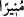

Çünkü O’nun eli Allâh’ın kudret elinde fânî ve Allâh’ın kudret eliyle bâkîdir. İşte
inşâallah Hz. Peygamber (s.a.)’in tüm sıfatları böyle anlaşılır ve onlardan faydalanılır.
Allah Teâlâ Hz. Peygamber (s.a.)’i nûrunun fazlalığından ve bu konuda kemâli
sebebiyle “nur saçan” buyurmak sûretiyle nurlandırıcı olmakla vasfetmiştir. Çünkü bazı
kandiller zayıf olup çevresini aydınlatmaz.
Kâşifî şöyle demiştir: “__WORD__ (nur saçan)” kelimesi te’kiddir. Yâni sen diğer kandiller
gibi bir kandil değilsin. Diğer kandiller bazen sönük olur, bazen parlak. Sende ise
aydınlık ezelden ebede kadar devam eder. Diğer kandillerin ışığı bir rüzgarla söner.
Senin ışığını ise hiç kimse söndüremez. Nitekim Allah Teâlâ şöyle buyuruyor: “Onlar
ağızlarıyla Allâh’ın nurunu söndürmek istiyorlar. Halbuki kâfirler istemese de
Allah nurunu tamamlayacaktır.” (es-Saff, 61 /8).
Mesnevî’de der ki:
Kim Hakk’ın mumunu üflerse,
O mum sönmez, o üfleyenin ağzı yanar.
Bir köpeğin ağzından deniz pislenir mi?
Güneş üflemekle söner mi?
Diğer kandiller gece ışık verirler, gündüz değil. Sen, dünyânın karanlık gecesini dâvet
nurunla aydınlatmışsın. Kıyamet gününde de şefaat ışığınla aydınlatacaksın.
Onun yüzü dünyâya aydınlık bir kandil oldu,
Gecemiz, onun bakışı sâyesinde gündüz oldu.
Yarın tekrar kandil yakıp aydınlatacak,
Ki onunla günahkârların günahı yanacak.
Keşfü’l-esrâr’da denilmiştir ki: “Hak Teâlâ, “(Orada) alev alev yanan bir kandil
yarattık.” (en-Nebe, 78/13) âyetinde güneşi ‘kandil’ diye isimlendirmiştir. Hz.
Peygamber (s.a.)’e de ‘kandil’ demiştir. Güneş gökteki kandildir. Hz. Peygamber ise
yeryüzündeki kandildir. Güneş, dünyânın kandilidir, Hz. Peygamber ise dînin kandilidir.
O (güneş) felek menzillerinin kandili, bu (Hz. Peygamber) ise felek mahfillerinin
kandilidir. O, su ve toprağın kandilidir, bu ise can ve gönlün kandilidir. O kandil
(güneşin doğması) ile insanlar uykudan uyanıp kalkarlar, bu kandilin ortaya çıkmasıyla
ise yokluk uykusundan kalkıp varlık sahasına gelirler.
Senin nûrun bütün ruhlar için şem’ olmasaydı
Yokluğun karanlıklarından seni kim dışarı çıkarabilirdi.
Bu mânâya işâret olarak buyurmuştur ki, yokluk ülkesinden geliyordun ve Âdem’in
önünde bir kandil elinde de senin ilk nûrundan bir nur vardı.